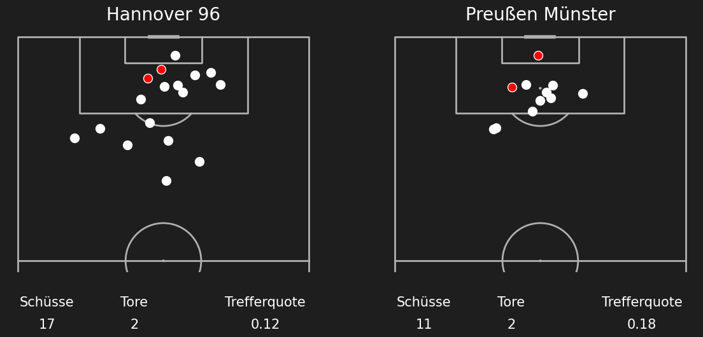
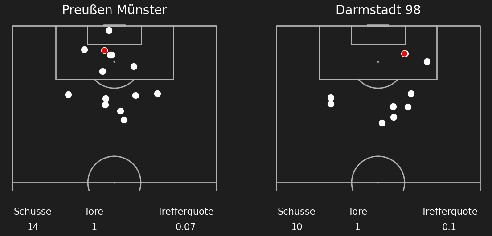

Shotmaps Preußen Münster Saison 24/25
Runde 1 SpVgg Greuther Fürth (3) - (1) Preußen Münster
Runde 2 Preußen Münster (0) - (0) Hannover 96
Runde 3 Preußen Münster (0) - (1) 1 FC Kaiserslautern
Runde 4 Hamburger SV (4) - (1) Preußen Münster
Runde 5 Preußen Münster (3) - (3) SC Paderborn 07
Runde 6 SSV Jahn Regensburg (0) - (3) Preußen Münster
Runde 7 Preußen Münster (1) - (2) FC Schalke 04
Runde 8 1 FC Nürnberg (3) - (2) Preußen Münster
Runde 9 Preußen Münster (1) - (1) SV 07 Elversberg
Runde 10 Eintracht Braunschweig (1) - (1) Preußen Münster
Runde 11 Preußen Münster (1) - (0) Fortuna Düsseldorf
Runde 12 Karlsruher SC (1) - (1) Preußen Münster
Runde 13 Preußen Münster (0) - (1) 1 FC Köln
Runde 14 Darmstadt 98 (0) - (0) Preußen Münster
Runde 15 Preußen Münster (1) - (2) 1 FC Magdeburg
Runde 16 Hertha BSC (1) - (2) Preußen Münster
Runde 17 Preußen Münster (0) - (0) SSV Ulm 1846
Runde 18 Preußen Münster (2) - (1) SpVgg Greuther Fürth
Runde 19 Hannover 96 (2) - (2) Preußen Münster

Runde 20 1 FC Kaiserslautern (2) - (1) Preußen Münster
Runde 21 Preußen Münster (1) - (2) Hamburger SV
Runde 22 SC Paderborn 07 (2) - (0) Preußen Münster
Runde 23 Preußen Münster (2) - (0) SSV Jahn Regensburg
Runde 24 FC Schalke 04 (1) - (0) Preußen Münster
Runde 25 Preußen Münster (0) - (1) 1 FC Nürnberg
_-_(1)_1_FC_Nürnberg.png)
Runde 26 SV 07 Elversberg (0) - (1) Preußen Münster
Runde 27 Preußen Münster (1) - (1) Eintracht Braunschweig
Runde 28 Fortuna Düsseldorf (1) - (0) Preußen Münster
Runde 29 Preußen Münster (1) - (1) Karlsruher SC
Runde 30 1 FC Köln (3) - (1) Preußen Münster
Runde 31 Preußen Münster (1) - (1) Darmstadt 98

Runde 32 1 FC Magdeburg (0) - (5) Preußen Münster
Runde 33 Preußen Münster (2) - (0) Hertha BSC
Runde 34 SSV Ulm 1846 (2) - (2) Preußen Münster